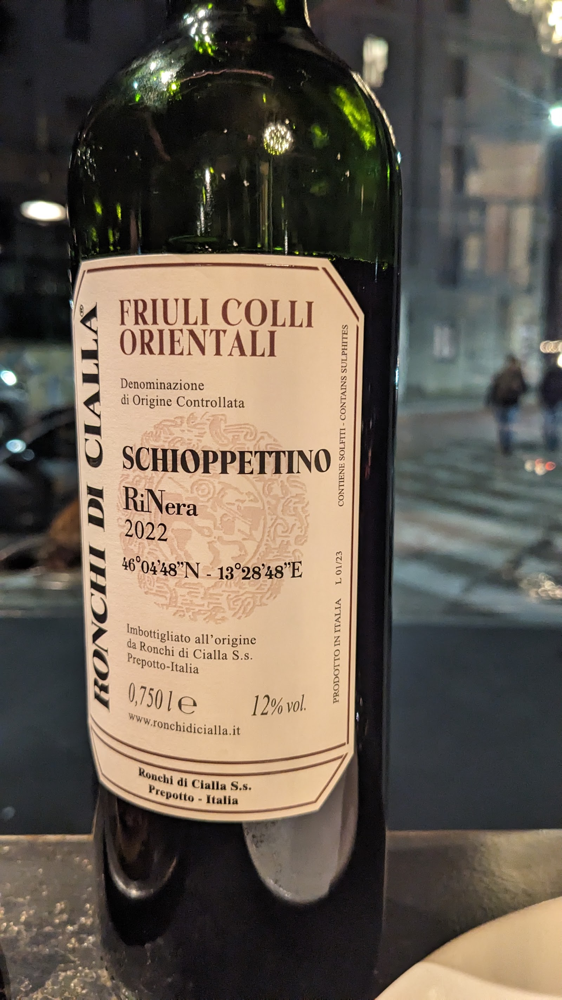

Il nome
Chi era il cavallante
Il cavallante era chi guidava il carro: portava le botti di paese in paese, quando il vino viaggiava lento e su strade di terra. Un mestiere di fatica e di fiducia.
Da qui il nome. E da qui l'idea: nessuna insegna, nessuna vetrina appariscente. Solo una porta, una parete di bottiglie e qualcuno che sa consigliarti. Chi ci trova, torna.
«Un gioiello di Milano — vale la deviazione solo per assicurarti di arrivarci.»
